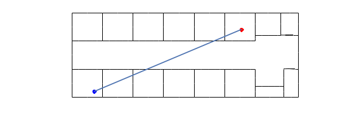
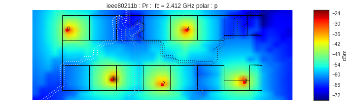

<!DOCTYPE html PUBLIC "-//W3C//DTD XHTML 1.0 Transitional//EN"
  "http://www.w3.org/TR/xhtml1/DTD/xhtml1-transitional.dtd">


<html xmlns="http://www.w3.org/1999/xhtml">
  <head>
    <meta http-equiv="Content-Type" content="text/html; charset=utf-8" />
    
    <title>Multi-wall model &mdash; Python 1 documentation</title>
    
    <link rel="stylesheet" href="../../_static/nature.css" type="text/css" />
    <link rel="stylesheet" href="../../_static/pygments.css" type="text/css" />
    <link rel="stylesheet" href="../../_static/gallery.css" type="text/css" />
    
    <script type="text/javascript">
      var DOCUMENTATION_OPTIONS = {
        URL_ROOT:    '../../',
        VERSION:     '1',
        COLLAPSE_INDEX: false,
        FILE_SUFFIX: '.html',
        HAS_SOURCE:  true,
        SOURCELINK_SUFFIX: '.txt'
      };
    </script>
    <script type="text/javascript" src="../../_static/jquery.js"></script>
    <script type="text/javascript" src="../../_static/underscore.js"></script>
    <script type="text/javascript" src="../../_static/doctools.js"></script>
    <script type="text/javascript" src="../../_static/sidebar.js"></script>
    <link rel="author" title="About these documents" href="../../about.html" />
    <link rel="top" title="Python 1 documentation" href="../../index.html" />
    <link rel="up" title="1   Overview" href="../TOC.html" />
    <link rel="next" title="Coverage Motley Kennan" href="CoverageMetis.html" />
    <link rel="prev" title="Example of Utilisation of Coverage" href="Coverage2.html" />
<script type="text/javascript">

  var _gaq = _gaq || [];
  _gaq.push(['_setAccount', 'UA-34943220-1']);
  _gaq.push(['_trackPageview']);

  (function() {
    var ga = document.createElement('script'); ga.type = 'text/javascript'; ga.async = true;
    ga.src = ('https:' == document.location.protocol ? 'https://ssl' : 'http://www') + '.google-analytics.com/ga.js';
    var s = document.getElementsByTagName('script')[0]; s.parentNode.insertBefore(ga, s);
  })();

</script>

  </head>
  <body role="document">

    <div class="header-wrapper">
      <div class="header">
          <p class="logo"><a href="../../index.html">
            
          </a>
          </p><div class="navbar">
          <ul>
            <li><a href="../../download.html">Download</a></li>
            <li><a href="../TOC.html">User Guide</a></li>
            <li><a href="../../modules/pylayers.html">Reference</a></li>
       </ul>

<div class="search_form">

<div id="cse" style="width: 100%;"></div>
<script>
  (function() {
       var cx = '004820205189002234612:sa15qzuf2ca';
           var gcse = document.createElement('script');
               gcse.type = 'text/javascript';
                   gcse.async = true;
                       gcse.src = (document.location.protocol == 'https:' ?
                           'https:' : 'http:') +
                               '//cse.google.com/cse.js?cx=' + cx;
                                   var s =
                                   document.getElementsByTagName('script')[0];
                                       s.parentNode.insertBefore(gcse, s);
                                         })();
</script>
<gcse:search></gcse:search>
</div>
</div> <!-- end navbar --></div>
    </div>

    <div class="content-wrapper">

      <div class="sphinxsidebar">
	<div class="sphinxsidebarwrapper">
	  <div class="rel">
	   
	<!-- rellinks[1:] is an ugly hack to avoid link to module
	    index  -->
	<div class="rellink">
	<a href="Coverage2.html" title="Example of Utilisation of Coverage"
	    accesskey="P">Previous
	    <br>
	    <span class="smallrellink">
	    Example of Ut...
	    </span>
	    <span class="hiddenrellink">
	    Example of Utilisation of Coverage
	    </span>
	    
	    </a>
	</div>
	    <div class="spacer">
	    &nbsp;
	    </div>
	
	<div class="rellink">
	<a href="CoverageMetis.html" title="Coverage Motley Kennan"
	    accesskey="N">Next
	    <br>
	    <span class="smallrellink">
	    Coverage Motl...
	    </span>
	    <span class="hiddenrellink">
	    Coverage Motley Kennan
	    </span>
	    
	    </a>
	</div>
	    <div class="spacer">
	    &nbsp;
	    </div>
	
	<div class="rellink">
	<a href="../../py-modindex.html" title="Python Module Index"
	    >Modules
	    <br>
	    <span class="smallrellink">
	    Python Module...
	    </span>
	    <span class="hiddenrellink">
	    Python Module Index
	    </span>
	    
	    </a>
	</div>
	<!-- Ad a link to the 'up' page -->
	<div class="spacer">
	&nbsp;
	</div>
	<div class="rellink">
	<a href="../TOC.html" title="1   Overview" >
	Up
	<br>
	<span class="smallrellink">
	1   Overview
	</span>
	<span class="hiddenrellink">
	1   Overview
	</span>
	
	</a>
	</div>
    </div>
    <p style="text-align: center; background-color: #BFFFFF">This documentation is

    for Python <strong>version 1</strong>
    &mdash; <a href="https://github.com/pylayers/pylayers/archive/master.zip">Other versions</a></p>
    
    <h3>Citing</h3>
    <p>If you use the software, please consider
    <a href="../../about.html#citing-pylayers">citing pylayers</a>.</p>
    <h3>This page</h3>
	<ul>
<li><a class="reference internal" href="#">Multi-wall model</a><ul>
<li><a class="reference internal" href="#defining-a-radio-link">Defining a radio link</a></li>
<li><a class="reference internal" href="#ploting-the-scene">Ploting the scene</a><ul>
<li><a class="reference internal" href="#finding-the-intersection-between-the-direct-path-and-the-walls">Finding the intersection between the &#8220;direct&#8221; path and the walls</a></li>
<li><a class="reference internal" href="#computing-the-multi-wall-model">Computing the Multi-wall model</a></li>
</ul>
</li>
</ul>
</li>
<li><a class="reference internal" href="#coverage-class">Coverage class</a></li>
</ul>

    
    </div>
	  </div>


      <div class="content">
            
      <div class="documentwrapper">
        <div class="bodywrapper">
          <div class="body" role="main">
            
  <div class="section" id="multi-wall-model">
<h1>Multi-wall model<a class="headerlink" href="#multi-wall-model" title="Permalink to this headline">¶</a></h1>
<div class="code python highlight-none"><div class="highlight"><pre><span></span>import time
from pylayers.util.project import *
import pylayers.util.pyutil as pyu
from pylayers.util.utilnet import str2bool
from pylayers.gis.layout import Layout
from pylayers.antprop.loss import *
from pylayers.antprop.coverage import *
from pylayers.network.model import *
%matplotlib inline
</pre></div>
</div>
<p>The layout is loaded from an ini file. If the graphs are not available,
they are built.</p>
<div class="code python highlight-none"><div class="highlight"><pre><span></span>L=Layout(&#39;TA-Office.ini&#39;)
</pre></div>
</div>
<div class="section" id="defining-a-radio-link">
<h2>Defining a radio link<a class="headerlink" href="#defining-a-radio-link" title="Permalink to this headline">¶</a></h2>
<p>The 2 extremities of the radio link (transmitter and receiver) have
coordinates described as 1x2 <code class="docutils literal"><span class="pre">numpy.array</span></code> .</p>
<ul class="simple">
<li>A a radio node</li>
<li>B a radio node</li>
</ul>
<div class="code python highlight-none"><div class="highlight"><pre><span></span>A=np.array((4,1)) # defining transmitter position
B=np.array((30,12)) # defining receiver position
</pre></div>
</div>
</div>
<div class="section" id="ploting-the-scene">
<h2>Ploting the scene<a class="headerlink" href="#ploting-the-scene" title="Permalink to this headline">¶</a></h2>
<p>The scene is plotted with the <code class="docutils literal"><span class="pre">showG</span></code> method of the Layout</p>
<div class="code python highlight-none"><div class="highlight"><pre><span></span># figure instanciation
f = plt.figure(figsize=(10,5))
ax = f.add_subplot(111)
r = np.array((A,B))
# plotting the Layout
f,ax = L.showG(fig=f,ax=ax,graph=&#39;s&#39;,nodes=False)
# plotting the Tx and Rx
ax.plot(A[0],A[1],&#39;ob&#39;)
ax.plot(B[0],B[1],&#39;or&#39;)
# plotting the LOS
ax.plot(r[:,0],r[:,1])
a = plt.axis(&#39;off&#39;)
</pre></div>
</div>

<div class="section" id="finding-the-intersection-between-the-direct-path-and-the-walls">
<h3>Finding the intersection between the &#8220;direct&#8221; path and the walls<a class="headerlink" href="#finding-the-intersection-between-the-direct-path-and-the-walls" title="Permalink to this headline">¶</a></h3>
<p>The function <code class="docutils literal"><span class="pre">angleonlink</span></code> returns the list of intersected segments
and the corresponding incidence angles (in radians) with respect to the
segment normal.</p>
<div class="code python highlight-none"><div class="highlight"><pre><span></span>%pdef L.angleonlink
</pre></div>
</div>
<div class="highlight-none"><div class="highlight"><pre><span></span>L.angleonlink(p1=array([0, 0]), p2=array([10,  3]))
</pre></div>
</div>
<div class="code python highlight-none"><div class="highlight"><pre><span></span>data=L.angleonlink(A,B)
</pre></div>
</div>
</div>
<div class="section" id="computing-the-multi-wall-model">
<h3>Computing the Multi-wall model<a class="headerlink" href="#computing-the-multi-wall-model" title="Permalink to this headline">¶</a></h3>
<p>The multi-wall model computation returns losses and LOS excess delay for
orthogonal and parallel polarization</p>
<div class="code python highlight-none"><div class="highlight"><pre><span></span>fGHz = 2.4
# observation grid
r = np.array((B,B))
Lwo,Lwp,Edo,Edp = Losst(L,fGHz,r.T,A)
print &#39;Losses orthogonal polarization \t %g dB&#39; %(Lwo[0][0])
print &#39;Losses parallel polarization \t %g  dB&#39; % (Lwp[0][0])
print &#39;Excess delay orthogonal polarization  \t %g ns&#39; %(Edo[0][0])
print &#39;Excess delay parallel polarization   \t %g ns&#39; %(Edp[0][0])
</pre></div>
</div>
<div class="highlight-none"><div class="highlight"><pre><span></span>Losses orthogonal polarization       14.9739 dB
Losses parallel polarization         9.82012  dB
Excess delay orthogonal polarization         1.05234 ns
Excess delay parallel polarization           1.19166 ns
</pre></div>
</div>
</div>
</div>
</div>
<div class="section" id="coverage-class">
<h1>Coverage class<a class="headerlink" href="#coverage-class" title="Permalink to this headline">¶</a></h1>
<p>By extension, the multi-wall model can also be used to perform a full
coverage of a Layout given a transmitter position.</p>
<div class="code python highlight-none"><div class="highlight"><pre><span></span>C = Coverage()
C.L  = L # set layout
C.tx = A # set the transmitter
</pre></div>
</div>
<div class="highlight-none"><div class="highlight"><pre><span></span>building Layout ...
check len(ncycles) == 2 passed
</pre></div>
</div>
<div class="code python highlight-none"><div class="highlight"><pre><span></span>C.L
</pre></div>
</div>
<div class="highlight-none"><div class="highlight"><pre><span></span>----------------
TA-Office.ini
Image(&#39;/home/uguen/Bureau/P1/struc/images/DLR4991.png&#39;)
----------------

Number of points  : 75
Number of segments  : 91
Number of sub segments  : 16
Number of cycles  : 0
Number of rooms  : 0
degree 0 : []
degree 1 : []
number of node point of degree 2 : 39
number of node point of degree 3 : 32

xrange :(-6.0, 46.0)
yrange :(-2.25, 17.25)

Useful dictionnaries
----------------
sl {slab name : slab dictionary}
name :  {slab :seglist}

Useful arrays
----------------
pt : numpy array of points
normal : numpy array of normal
offset : numpy array of offset
tsg : get segment index in Gs from tahe
isss :  sub-segment index above Nsmax
tgs : get segment index in tahe from self.Gs
upnt : get point id index from self.pt
lsss : list of segments with sub-segment
sla : list of all slab names (Nsmax+Nss+1)
degree : degree of nodes

Useful tip
----------------
Point p in Gs =&gt; p_coord:
Segment s in Gs =&gt; s_ab coordinates
s -&gt; u = self.tgs[s] -&gt; v = self.tahe[:,u] -&gt; s_ab = self.pt[:,v]
</pre></div>
</div>
<div class="code python highlight-none"><div class="highlight"><pre><span></span>C.creategrid()
</pre></div>
</div>
<p>The coverage is performed on a grid. Boundaries of the grid are
specified in the
<code class="docutils literal"><span class="pre">`coverage.ini</span></code> &lt;<a class="reference external" href="https://github.com/pylayers/pylayers/blob/master/data/ini/coverage.ini">https://github.com/pylayers/pylayers/blob/master/data/ini/coverage.ini</a>&gt;`__
file</p>
<div class="code python highlight-none"><div class="highlight"><pre><span></span>t1=time.time()
C.cover()
t2=time.time()
print &#39;Coverage performed in &#39;, t2-t1, &#39;s&#39;
</pre></div>
</div>
<div class="highlight-none"><div class="highlight"><pre><span></span>Coverage performed in  2.16205501556 s
</pre></div>
</div>
<p>For Orthogonal polarization</p>
<div class="code python highlight-none"><div class="highlight"><pre><span></span>fig1=plt.figure(figsize=(10,10))
f,a = C.show(typ=&#39;pr&#39;,fig=fig1,nodes=False)
</pre></div>
</div>

<p>For parallel polarization</p>
<div class="code python highlight-none"><div class="highlight"><pre><span></span>C.cover(snr=False,sinr=False)
fig1=plt.figure(figsize=(10,10))
f,a = C.show(typ=&#39;pr&#39;,fig=fig1)
</pre></div>
</div>

</div>


          </div>
        </div>
      </div>
        <div class="clearer"></div>
      </div>
    </div>
  

    <div class="footer">
        &copy; 2016, PyLayers developer team.
      Last updated on Oct 22, 2016.
      Created using <a href="http://sphinx.pocoo.org/">Sphinx</a> 1.5a0. Design by <a href="http://desgrana.es">Desgrana</a>.
    <span style="padding-left: 5ex;">
    <a href="../../_sources/notebook/2-AP/MultiWall.rst.txt"
	    rel="nofollow">Show this page source</a>
    </span>
    </div>
     <div class="rel">
    
    <div class="buttonPrevious">
      <a href="Coverage2.html">
        Previous
      </a>  
    </div>
    <div class="buttonNext">
      <a href="CoverageMetis.html">
        Next
      </a>  
    </div>
    <div class="buttonPrevious">
      <a href="../../py-modindex.html">
        Previous
      </a>  
    </div>
    
     </div>
     <script type="text/javascript">
       $("div.buttonNext, div.buttonPrevious").hover(
           function () {
               $(this).css('background-color', '#AFFFFF');
           },
           function () {
               $(this).css('background-color', '#AFFFFF');
           }
       );
     </script>
  </body>
</html>